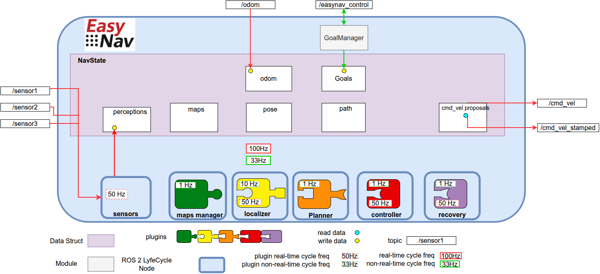
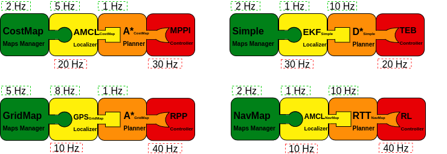
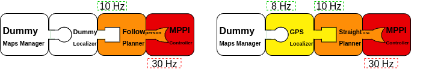

Core Design and Architecture¶
EasyNav is designed with three core principles in mind: modularity, real-time performance, and extensibility. Its architecture separates concerns into well-defined components, making it both easy to adapt and efficient to execute.

The figure above illustrates the general architecture of EasyNav.
EasyNav runs within a single process that hosts a ROS 2 Lifecycle Node called SystemNode, which coordinates the entire navigation system. Through composition, SystemNode includes several other ROS 2 Lifecycle Nodes, each responsible for a specific function in the navigation pipeline:
Sensors Node: This node collects and preprocesses all sensory input used by the navigation system, across six built-in perception types (point clouds/laser scans, images, IMU, GNSS, odometry, and 3D detections). Sensors are ungrouped by default; they are only placed into a named group when explicitly configured to do so (see Sensor Input and Perception Handling).
MapsManager Node: Responsible for how the environment is represented. It supports multiple plugins that define the actual data structure for the map: costmaps, NavMap triangulated meshes, Bonxai probabilistic voxel maps, octomaps, and simpler binary maps, among others. The plugin selection is configurable depending on the application or use case.
Localizer Node: Estimates the robot’s position within the map. It uses a localization plugin that must be compatible with the type of environment representation used by the MapsManager.
Planner Node: Computes a path from the robot’s current position to its goal (as managed by the GoalManager). The selected plugin determines the planning algorithm used.
Controller Node: Generates velocity commands to follow the planned path, through a controller plugin. It is also the single velocity output of EasyNav: it selects, every real-time cycle, among the commands proposed by the controller and by the recovery system, smooths it within the robot’s limits, and publishes it as
TwistorTwistStamped(see Velocity Output: Robot Limits, Mux and Smoother).Recovery Node: Hosts the recovery system, a plugin that detects problems (localization lost, robot stuck, obstacle ahead…) and reacts to them: it can drive or stop the robot, hold or abort the mission, change parameters, or terminate EasyNav (see Recovery System).
An EasyNav application is built by combining multiple plugins from the different EasyNav components. Typical configurations may include combinations such as the following:

This figure illustrates several possible plugin compositions. The key aspect is ensuring that the selected plugins are compatible with one another. For example, if a maps manager based on costmaps is chosen, the remaining plugins must either support this representation or operate independently of it. In practice, the localizer and planner are usually tightly coupled to the representation defined by the maps manager, whereas the controller tends to be more independent, since it typically relies on route formats that are relatively standardized.
It is also possible to use Dummy plugins. Each component provides one in case you want to build an application that does not require that specific functionality. For example, a person-following application may not need either a map or a localizer, while an outdoor navigation application may rely on GPS for localization and simply plan a straight-line path to the target.

These plugin combinations are defined in the single EasyNav configuration file, where the plugins for each component and their execution frequencies are specified. This is, simplified, params/simple.params.yaml of the Kobuki PlayGround:
controller_node:
ros__parameters:
use_sim_time: true
robot_limits:
max_linear_vel: 0.6
max_angular_vel: 1.0
controller_types: [simple]
simple:
rt_freq: 30.0
plugin: easynav_simple_controller/SimpleController
look_ahead_dist: 0.2
k_rot: 0.5
localizer_node:
ros__parameters:
use_sim_time: true
localizer_types: [simple]
simple:
rt_freq: 50.0
freq: 5.0
reseed_freq: 1.0
plugin: easynav_simple_localizer/AMCLLocalizer
num_particles: 100
noise_translation: 0.05
noise_rotation: 0.1
noise_translation_to_rotation: 0.1
initial_pose:
x: 0.0
y: 0.0
yaw: 0.0
std_dev_xy: 0.1
std_dev_yaw: 0.01
maps_manager_node:
ros__parameters:
use_sim_time: true
map_types: [simple]
simple:
freq: 10.0
plugin: easynav_simple_maps_manager/SimpleMapsManager
package: easynav_playground_kobuki
map_path_file: maps/home.map
planner_node:
ros__parameters:
use_sim_time: true
planner_types: [simple]
simple:
freq: 0.5
plugin: easynav_simple_planner/SimplePlanner
sensors_node:
ros__parameters:
use_sim_time: true
forget_time: 0.5
sensors: [laser1]
laser1:
topic: /scan_raw
type: sensor_msgs/msg/LaserScan
recovery_node:
ros__parameters:
use_sim_time: true
recovery_manager:
plugin: easynav_simple_recovery/SimpleRecoveryManager
system_node:
ros__parameters:
use_sim_time: true
robot_geometry:
radius: 0.3
height: 0.5
position_tolerance: 0.1
angle_tolerance: 0.05
Each node declares one or more plugin types (e.g., simple) that can be dynamically selected. The plugin name (e.g., easynav_simple_controller/SimpleController) must match the name registered in the plugin system.
This design allows for easy experimentation with different algorithms or system behaviors simply by modifying configuration files—without changing any source code.
Some applications may not require a full navigation pipeline. For example, systems focused on teleoperation, behavior testing, or hardware validation might not need environment representation, localization, or path planning.
To support such minimal setups, EasyNav provides a Dummy plugin for each core module. These plugins implement the required interfaces but do not perform any real computation. This allows the system to run with minimal overhead while remaining fully compatible with the rest of the EasyNav infrastructure.
Below is an example configuration using dummy plugins for all components, effectively creating a Dummy Navigation System:
controller_node:
ros__parameters:
use_sim_time: true
controller_types: [dummy]
dummy:
rt_freq: 30.0
plugin: easynav_controller/DummyController
cycle_time_rt: 0.001
localizer_node:
ros__parameters:
use_sim_time: true
localizer_types: [dummy]
dummy:
rt_freq: 50.0
freq: 5.0
reseed_freq: 0.1
plugin: easynav_localizer/DummyLocalizer
cycle_time_nort: 0.01
cycle_time_rt: 0.001
maps_manager_node:
ros__parameters:
use_sim_time: true
map_types: [dummy]
dummy:
freq: 10.0
plugin: easynav_maps_manager/DummyMapsManager
cycle_time_nort: 0.1
planner_node:
ros__parameters:
use_sim_time: true
planner_types: [dummy]
dummy:
freq: 1.0
plugin: easynav_planner/DummyPlanner
cycle_time_nort: 0.2
sensors_node:
ros__parameters:
use_sim_time: true
forget_time: 0.5
recovery_node:
ros__parameters:
use_sim_time: true
recovery_manager:
plugin: easynav_recovery/DummyRecoveryManager
system_node:
ros__parameters:
use_sim_time: true
position_tolerance: 0.1
angle_tolerance: 0.05
DummyRecoveryManager does nothing. It is also what the recovery node loads when
recovery_manager.plugin is not set.
Note
cycle_time_rt/cycle_time_nort are optional and default to 0.0 (no delay, no CPU
cost) — with them unset, Dummy plugins are as lightweight as the “minimal overhead” description
above implies. When set, they are implemented as a busy-wait, not a sleep: the plugin will
pin a CPU core at ~100% for that duration on every cycle. This is deliberate, so that a Dummy
plugin configured this way simulates a genuinely CPU-bound slow plugin — including its effect on
other SCHED_FIFO real-time work sharing that core — rather than just an equivalent
wall-clock delay. Set these thoughtfully: a large cycle_time_rt relative to rt_freq will
keep a core continuously busy.
This configuration is especially useful for testing system integration, message flow, and user interfaces without requiring sensor data or a simulated robot. You can later replace dummy plugins with functional ones as needed.
SystemNode parameters¶
All the parameters of system_node, with a link to where each group is explained:
Parameter (on |
Default |
Meaning |
|---|---|---|
|
|
Run the real-time cycle with |
|
|
Rate of the real-time system cycle (Hz). Upper bound of every |
|
|
Rate of the non-real-time system cycle (Hz). Upper bound of every |
|
|
Longest time each real-time cycle spends handling pending callbacks, such as sensor messages (s). |
|
|
The same for the non-real-time cycle (s). |
|
Frame names shared by every component. |
|
|
|
How far ahead of the latest TF a lookup may be extrapolated (see Lookups slightly ahead of the latest TF). |
|
see Robot Geometry |
The robot’s shape, shared by every component. |
|
|
Safety mode and memory locking (see Safety parameters and safety mode and Memory locking). |
|
|
Limits configured in the safety channel, checked against |
|
|
When a real-time cycle is late, and how many in a row are an error (see Real-time cycle monitoring and heartbeat). |
|
|
Period of the heartbeat published from the real-time cycle (s) (see Real-time cycle monitoring and heartbeat). |
|
|
Maximum age of the safety channel’s status message (s) (see Safety channel status). |
|
|
Maximum age of the robot pose before the robot is stopped (s), |
The controller node and each plugin have their own parameters, documented with them.
Coordinate Frames (TF)¶
EasyNav follows REP-105 for its frame-naming
convention, and centralizes all frame configuration in a single place: system_node. Rather
than each node or plugin declaring its own frame parameters (an early version of EasyNav had, for
example, a perception_default_frame parameter local to sensors_node), SystemNode
declares six frame parameters once, assembles them into a single TFInfo struct, and pushes it
into RTTFBuffer — a process-wide singleton that is both the shared tf2_ros::Buffer used
for real-time TF lookups and the single source of truth for frame names across EasyNav.
Parameter (on |
Default |
Meaning |
|---|---|---|
|
|
Optional prefix prepended to every frame below; used to give each robot its own TF tree in multi-robot setups (see Multi-Robot Navigation with EasyNav). |
|
|
Global map frame. |
|
|
Odometry frame. |
|
|
Robot base frame. |
|
|
Robot footprint frame (e.g. used by |
|
|
Global/earth-fixed frame used by global estimators (e.g. GNSS-based fusion in
|
On on_configure(), SystemNode reads these six parameters into a TFInfo and calls
RTTFBuffer::getInstance()->set_tf_info(tf_info). If tf_prefix is non-empty, this call
automatically prepends "<tf_prefix>/" to map_frame, odom_frame, robot_frame,
robot_footprint_frame and world_frame — this is how a multi-robot setup gets a fully
namespaced TF tree per robot (r1/base_link, r1/odom, …) from a single tf_prefix: r1
parameter, without spelling out every frame name per robot.
Any node or plugin that needs a frame name reads it from the shared singleton instead of
hardcoding a literal such as "map" or "base_link":
const auto & tf_info = easynav::RTTFBuffer::getInstance()->get_tf_info();
const std::string & map_frame = tf_info.map_frame;
This is why plugins (obstacle filters, localizers, the fused-perception publisher in
SensorsNode, …) always resolve frames through RTTFBuffer::getInstance()->get_tf_info()
rather than through a per-node parameter.
get_tf_info() returns a snapshot copy (taken under an internal lock), not a reference into
live state — it is read continuously from both the real-time and non-real-time threads (see
below) while set_tf_info() can in principle be called again on a reconfigure, so the code
above is safe to use exactly as written from either thread.
Lookups slightly ahead of the latest TF¶
On a real robot, sensor data often carries a stamp a few milliseconds newer than the latest TF in
the buffer: odometry published late, driver timestamps, CPU load. tf2 never extrapolates into
the future, so a lookup at the data’s stamp would throw tf2::ExtrapolationException.
RTTFBuffer answers these lookups itself, up to a small horizon ahead of the latest TF. It
estimates the motion of the whole chain between its latest common time and a short window before
it, and integrates it as a constant twist (the exact SE(3) motion, so arcs and turns are
extrapolated along the arc, not along a straight line). The returned transform carries the
requested stamp.
It only runs when
tf2itself fails with a future extrapolation: lookups inside the buffer’s history behave and cost exactly as intf2_ros::Buffer.It covers every
lookupTransformandcanTransformoverload, including the ones with a fixed frame, with a timeout and withrclcpp::Time. With a timeout, a request within the horizon is answered at once instead of blocking.Unknown frames, disconnected trees, requests further ahead than the horizon and chains without enough history still throw
tf2’s original exception.
Parameter (on |
Default |
Meaning |
|---|---|---|
|
|
Largest horizon ahead of the latest TF that a lookup may be extrapolated (s). |
|
|
History used to estimate the motion of the chain (s). |
Components therefore look up the transform at the stamp of their data and do not need their own workaround (waiting for the TF, falling back to the latest TF) for a few milliseconds of TF lag. Keep the horizon short: the longer it is, the longer a TF that has really stopped arriving goes unnoticed, and the more the extrapolation drifts if the robot accelerates or turns within it.
Robot Geometry¶
The robot’s shape is configured once, in system_node, and shared with every component that needs
it (inflation filters, planners, safety reflexes, recovery systems…):
Parameter (on |
Default |
Meaning |
|---|---|---|
|
|
Circumscribed radius: the smallest circle containing the robot (m). |
|
|
The largest circle inside the robot (m). Defaults to |
|
|
The top of the robot, above the robot frame (m). |
|
|
The robot’s polygon, |
Without a footprint the robot is a circle. With one, the radii not configured follow from it (the
farthest vertex, and the nearest side to the robot frame). Components that only know radii (costmap
inflation, point-based planners, the collision reflex) keep using them, so configured radii may stay
planning margins; components that check the footprint (MPPI) use the polygon, turned with the robot.
A configured radius that does not contain the footprint is accepted with a warning: what uses it
may let the corners touch obstacles. For instance, the Summit XL of the Summit PlayGround plans as a 0.7 m circle and MPPI checks its 0.74 × 0.62 m body:
system_node:
ros__parameters:
robot_geometry:
radius: 0.7
inscribed_radius: 0.7
height: 1.0
footprint: [0.35, 0.31, -0.39, 0.31, -0.39, -0.31, 0.35, -0.31]
As with frames, SystemNode reads them on every configure and shares them, before its subnodes
configure, through a process-wide singleton (RobotGeometryRegistry). Plugins read them with
MethodBase::get_robot_geometry(); any other code, with easynav::get_robot_geometry(node)
(easynav_common/RobotGeometry.hpp).
Components used to declare their own copies (e.g. an inflation filter’s inscribed_radius, a
planner’s robot_radius). Those parameters still work, with a deprecation warning, where
robot_geometry does not configure that field; robot_geometry takes precedence when both are
set.
Velocity Output: Robot Limits, Mux and Smoother¶
ControllerNode is the only component that publishes velocity commands (cmd_vel, or
cmd_vel_stamped with controller_node.use_cmd_vel_stamped). Every real-time cycle:
The controller plugin computes its command (
cmd_velin NavState), which is proposed as theCONTROLLERsource if it is a new one: its stamp or its value changed since the last one (see Safety).The recovery system may propose its own:
TAKEOVER(it drives the robot) orOVERRIDE(an emergency, e.g. braking). See Recovery System.The
VelocityMuxselects one:OVERRIDE>TAKEOVER> pause (zero velocity) >CONTROLLER. Proposals last one cycle, so no source can leave a stale command behind. Proposals with non-finite values (NaN, inf) are discarded (see Safety).The
VelocitySmootherbrings the published command towards the selected one within the robot limits, per axis, stopping at zero before a change of direction. AnOVERRIDEis published as is.
The robot limits are configured once, in controller_node:
controller_node:
ros__parameters:
robot_limits:
max_linear_vel: 0.6 # m/s, forward
min_linear_vel: -0.3 # m/s, backward (0: no reversing)
max_angular_vel: 1.0 # rad/s, either direction
max_linear_acc: 1.0 # m/s^2, speeding up
max_linear_decel: 1.0 # m/s^2, slowing down
max_angular_acc: 2.0 # rad/s^2
max_angular_decel: 2.0 # rad/s^2
Holonomic robots also have max_lateral_vel (linear.y, either direction), max_lateral_acc
and max_lateral_decel. Not configured, they take the linear ones (max_linear_vel,
max_linear_acc, max_linear_decel); max_lateral_vel: 0.0 keeps the robot from moving
sideways.
Aerial robots also have max_vertical_vel (linear.z, either direction), max_vertical_acc
and max_vertical_decel. max_vertical_vel is 0 by default: the robot does not move
vertically, and linear.z is always 0.
Robots that cannot turn in place, like cars with Ackermann steering, set min_turning_radius
(m). Every command then keeps |angular.z| <= |linear.x| / min_turning_radius, also while the
speed ramps up or down, so the turn follows the speed. It is 0 by default: no limit.
Controller plugins read them with ControllerMethodBase::get_robot_limits() instead of declaring
their own, and the smoother enforces the same limits on every command published. A controller’s
former limit parameters (e.g. max_linear_speed) still work, with a deprecation warning, where
robot_limits does not set that limit. Likewise, system_node.use_cmd_vel_stamped is
deprecated in favor of controller_node.use_cmd_vel_stamped.
When EasyNav is deactivated, ControllerNode brakes within the deceleration limits and always ends
with an exact zero command: drivers usually keep executing the last command received.
ControllerNode also makes sure the robot never keeps executing a stale or invalid command:
see Stale and invalid commands.
Braking before an obstacle is not the controller’s job: the recovery system does it, for whatever
command is about to be sent (the controller’s former colision_checker.* parameters are gone).
Reconfiguring EasyNav at Runtime¶
EasyNav can go active → inactive → unconfigured → inactive → active in the middle of a mission, for example to change parameters or to switch plugins:
Parameters changed while unconfigured, including the plugin of any component, take effect when it is configured again. Every plugin tolerates being initialized again on the same node, even after a plugin of another type under the same name.
The mission survives: the
GoalManageris kept across cleanup/configure, so an ongoing navigation is neither cancelled nor lost.Localizers continue from the last known pose. On its first cycle, a localizer gets the valid
robot_poseleft in NavState by the previous one, of any type (e.g. AMCL ↔ Fusion), throughLocalizerMethodBase::on_last_known_pose().The robot stops while EasyNav is not active.
The recovery system can trigger such a reconfiguration itself (see Recovery System), except in safety mode (see Safety parameters and safety mode).
NavState: The Shared Blackboard¶
A key architectural component of EasyNav is the NavState, a shared blackboard that holds all the internal state information required by the navigation system.
Each module in EasyNav—such as the Localizer, Planner, or Controller—reads its inputs from the NavState and writes its outputs back to it. This central structure replaces the need for internal ROS 2 communications between modules.
The motivation behind using a shared blackboard is to:
Avoid ROS 2 topic-based communication internally, reducing unnecessary overhead and complexity.
Improve real-time determinism, as data access becomes local and predictable.
Simplify integration and debugging, by consolidating all system-relevant information in a single place.
The NavState contains data such as:
the robot’s estimated pose,
the current navigation goal,
planned paths,
velocity commands,
perception data,
and diagnostic or meta-state information.
By inspecting the NavState at runtime, developers gain full visibility into the internal state of EasyNav at any given moment. This approach not only improves transparency, but also enables advanced tooling for monitoring, introspection, and explainability.
Future versions of EasyNav may include graphical or CLI-based tools to explore and trace the NavState over time.
Real-Time Execution Model¶
Another key feature of EasyNav is its emphasis on real-time performance. The navigation system is designed to react with strict timing constraints, minimizing latency from perception to action.
To achieve this, EasyNav separates execution into two distinct control loops:
Real-Time Cycle This loop is optimized for minimal end-to-end latency. Its goal is to process new sensor data and update the robot’s motion commands as quickly as possible. It includes:
perception input processing,
pose prediction via odometry,
velocity command generation by the controller,
fast recovery reactions (e.g. braking before an obstacle),
and the selection, smoothing and publication of the velocity command (
TwistorTwistStamped).
Non-Real-Time Cycle This loop handles operations where occasional execution delays are tolerable. Tasks in this loop include:
map updates,
localization corrections based on perception (e.g., particle filter resampling),
path planning,
and recovery: diagnosing problems and deciding how to handle them.
Additionally, when new perception data is received, the real-time cycle is triggered immediately, allowing the system to respond as fast as possible and minimize perception-to-action latency.
Frequencies: system cycles and components¶
There are two kinds of frequencies, and only one of them is what navigation needs:
Each component’s frequency —
rt_freqandfreqof every plugin (controller, localizer, maps manager, planner, recovery evaluators). This is what matters: the controller computes a command at itsrt_freq, the planner plans at itsfreq, and so on.The system cycles —
system_node.rt_freq(200 Hz by default) andsystem_node.freq. They do not run the components at that rate: each cycle receives the sensor data (RT), publishes the velocity command (RT) and checks, for each component, whether it is time for it to run. If it is not, the component does nothing in that cycle — except when it is triggered by new perceptions. So the system frequency is the resolution of that check, not the components’ rate.
The rules that follow from this:
A component’s frequency must not exceed its system cycle’s: every
<plugin>.rt_freqat mostsystem_node.rt_freqand every<plugin>.freqat mostsystem_node.freq. Otherwise EasyNav fails to configure, naming the parameter. Both must also be finite and greater than zero (std::runtime_errorwhen the plugin initializes).The schedule does not drift: each run is scheduled one period after the previous scheduled time, not after the cycle that ran it. A controller at 30 Hz checked by a 50 Hz cycle runs 30 times per second, alternating gaps of 20 and 40 ms; a cycle that comes a little late does not cost a run. If a component falls more than one period behind (e.g. the cycle stalled), the missed runs are lost — it runs once and its schedule restarts from then, without a burst of catch-up runs. A triggered run also restarts the schedule.
Whether each component keeps its frequency is monitored. Every component’s runs are counted in windows of 1 s or 10 periods, whichever is longer. A window with fewer than 90 % of the expected runs (with one run of margin) is slow: the component’s diagnostic becomes
WARN(after 3 slow windows in a row, its message says for how long); a window on rate makes itOKagain. It is only reported, never anERROR: the recovery system does not abort, mitigate or ask for help because of it. Time without checks counts too (a component that blocks its cycle for seconds is reported), except while EasyNav is inactive: the nodes restart the measurement when they are activated. The diagnostics are in NavState’sdiagnosticsgroup (and on/diagnosticswith the diagnostic recovery manager):NavState key
Monitors
diagnostics.<plugin>.rt_rate<plugin>.rt_freq(controller, localizer RT update)diagnostics.<plugin>.rate<plugin>.freq(localizer, maps manager, planner, recovery evaluators)Each one is written when first checked (
OK, “measuring”) and then only on changes. Running faster than configured (e.g. triggered by the sensors) is fine. The rates are measured with the nodes’ clock: in simulation, simulated time.The system RT cycle itself is monitored too (
diagnostics.rt_cycle, see Real-time cycle monitoring and heartbeat), but outside safety mode a late RT cycle is only aWARN: if the components still keep their frequencies, navigation is not affected. A slow RT cycle matters by itself only for what it does directly — receiving the sensors and publishing the commands.
In practice: set system_node.rt_freq high enough for the fastest RT component and for the
latency you want between a perception and its command; and if a component reports that it does not
keep its frequency, lower that component’s frequency or make its update (or what shares its cycle)
cheaper — raising the system frequency does not help.
The real-time cycle runs in its own thread with SCHED_FIFO priority 80 when
system_node.use_real_time is true (the default). The system must allow it; see
Real-time System Setup.
This dual-cycle model balances responsiveness with computational stability, ensuring critical actions happen with deterministic timing while less urgent tasks are scheduled opportunistically.